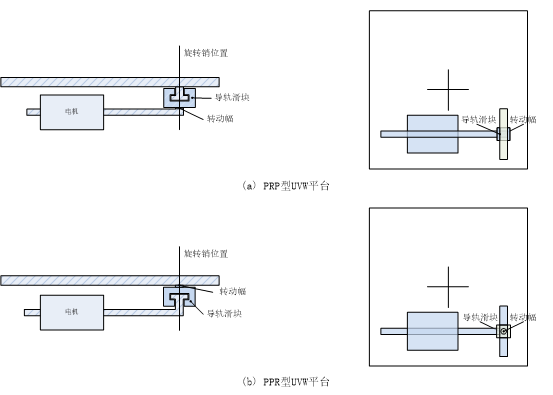
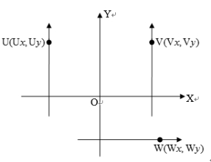
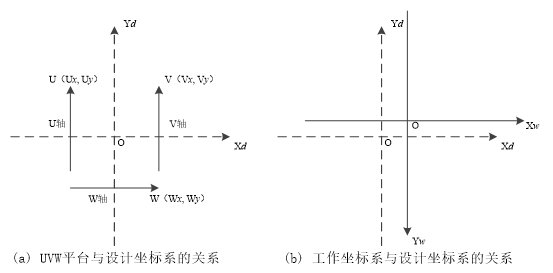

UVW平台以其角度的高精度特性，在视觉对位方案中被广泛使用。在实际应用中，UVW的标定对位过程往往需要先将坐标转换到XYD平台坐标系下进行计算，计算结果而后再转换回UVW坐标系。UVW平台适配器就是完成UVW平台坐标与XYD平台坐标之间相互转换功能的工具。
| 分类 | 参数名称 | 参数描述 |
|---|---|---|
| 属性窗口 | 适配模式 | 包含UVW转XYD和XYD转UVW两种坐标转换模式 |
| 平台类型 | 包含PPR型和PRP型两种UVW平台类型 |
|
| 平台参数类型 | 仅在平台类型为PPR型时设置，有直角坐标参数和极坐标参数两种选项，意思分别为UVW坐标转到直角坐标系下和转到极坐标系下；平台类型为PRP时，默认固定为直角坐标系的转换。 |
|
| U轴连接点坐标 | 当直角坐标参数时，U轴连接点坐标 | |
| V轴连接点坐标 | 当直角坐标参数时，V轴连接点坐标 | |
| W轴连接点坐标 | 当直角坐标参数时，W轴连接点坐标 | |
| 旋转中心坐标 | 当直角坐标参数时，旋转中心坐标 | |
| U轴连接点角度 | 当极坐标参数时，U轴连接点角度 | |
| V轴连接点角度 | 当极坐标参数时，V轴连接点角度 | |
| W轴连接点角度 | 当极坐标参数时，W轴连接点角度 | |
| 连接点外接圆半径 | 当极坐标参数时，连接点外接圆半径 | |
| U轴方向 | 与设计坐标系X/Y轴同向/反向四个选项 | |
| V轴方向 | 与设计坐标系X/Y轴同向/反向四个选项 | |
| W轴方向 | 与设计坐标系X/Y轴同向/反向四个选项 | |
| 工作坐标系X轴方向 | 与设计坐标系X/Y轴同向/反向四个选项 | |
| 工作坐标系Y轴方向 | 与设计坐标系X/Y轴同向/反向四个选项 | |
| 图像窗口 | 无 | 无 |
| 数据链 | 输入平台轴位置 | 输入的待适配转换的平台轴位置 |
| 高级界面 | 无 | 无 |
| 分类 | 参数名称 | 参数描述 |
|---|---|---|
| 监视窗口 | 输出平台轴位置 | 转换后的平台轴位置结果 |
| 执行结果 | 显示工具执行结果，执行成功显示“OK”，执行失败显示“NG”，同监视窗口的执行结果参数。 | |
| 执行时间 | 执行时间 | |
| 数据链 | 输出平台轴位置 | 转换后的平台轴位置结果 |
目前已见的UVW平台有两种结构，一种是以电机丝杠——转动幅——导轨滑块——平台台面顺序连接的3-PRP UVW平台，即导轨滑块与平台台面固定，如图1（a）所示；另一种是以电机丝杠——导轨滑块——转动幅——平台台面顺序连接的3-PPR UVW平台，即转动幅与平台台面固定，其中，P(Prismatic joint)为移动副，R(Revolute joint)为转动副，如图1（b）所示。两种类型相比较，相同行程下，PRP型具有较高的角度精度，PPR型具有较大的旋转角度。两种结构平台的转换算法存在差异。

两平台的的模型示意图如图2所示。

PPR型的平台厂商在给平台参数的时候与PRP型不同，一般并不是给的三个轴的旋转销（角）坐标，而是以极坐标的形式，给出了三个旋转销的角度和到平台中心的半径。这样就有了PPR型UVW平台的极坐标转换算法。
UVW-XYθ转换实际就是UVW平台轴位置与工作坐标系XWOYW位置之间的转换。转换过程中借助了定义UVW各轴旋转销坐标的设计坐标系XdOYd，如图3所示。

在参数设置时，用户一般会有图3(a)所示的UVW平台与设计坐标系的关系参数资料。轴方向可以通过图3（a）得到UVW平台各轴与设计坐标系相应轴的方向关系进行设置。UVW平台与设计坐标系关系参数可以实现UVW轴位置和XYθ坐标之间的相互转化。
在实际应用中，会定义一个工作坐标系，通常与图像坐标系方向相同，理想情况下，工作坐标系原点与平台设计坐标系原点重合。如图3-1（b）中的所示的坐标系XWOYW。通过工作坐标系与设计坐标系关系参数可以实现工作坐标系位置与设计坐标系位置的相互转换。事实上，工作坐标系与设计坐标系关系参数在UVW平台转换算法中只影响结果的符号（方向）。
无
参见“\Samples\UVW平台适配器.gvp”。